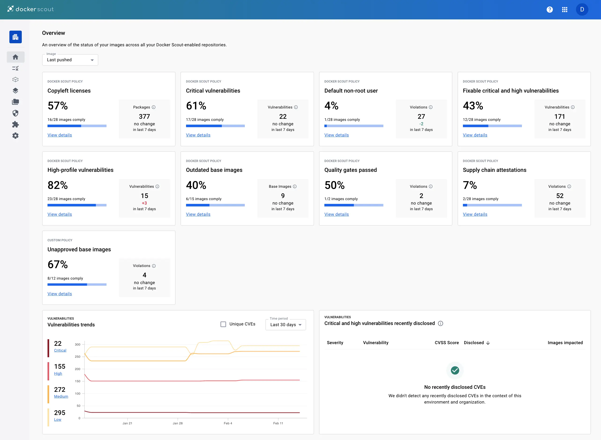

Contexte
Stage réalisé dans un environnement technique avancé avec découverte du CERN. Introduction aux concepts de cybersécurité, aux conteneurs Docker et à l'analyse des vulnérabilités.
Missions réalisées
- Découverte de Docker et du fonctionnement des conteneurs
- Analyse de vulnérabilités dans du code et des images
- Utilisation de GitLab avec gestion de branches
- Participation à la mise en place de processus de sécurité
Compétences acquises
- Compréhension des vulnérabilités applicatives
- Utilisation de Docker en environnement réel
- Gestion de version avec GitLab (branches, commits)
- Introduction aux pratiques DevSecOps
Exemples visuels

" alt="docker">